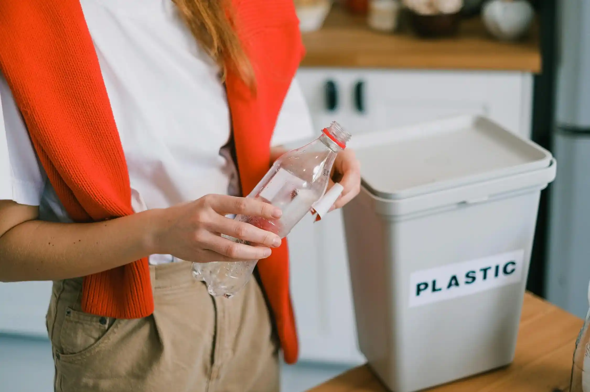

Cómo empezar a reciclar en casa: Guía práctica para principiantes

Introducción
El reciclaje es una forma efectiva de cuidar el planeta y reducir el impacto ambiental desde la comodidad de tu hogar. Sin embargo, muchas personas no saben por dónde empezar. En esta guía práctica, te mostraremos cómo organizar un sistema de reciclaje en casa de manera fácil y efectiva.
Conoce los materiales reciclables
El primer paso es identificar qué materiales puedes reciclar: papel, cartón, plástico, vidrio, metal y residuos orgánicos. Investiga las normativas locales en Barcelona para saber cómo clasificar correctamente estos desechos.
Crea un sistema de clasificación
Coloca diferentes contenedores en tu hogar, cada uno destinado a un tipo de material reciclable. Etiquétalos claramente para facilitar el proceso. Si tienes espacio limitado, utiliza bolsas reutilizables o contenedores apilables.
Reduce y reutiliza antes de reciclar
El reciclaje no es el único paso. Intenta reducir el consumo de productos desechables y reutiliza aquellos materiales que puedas, como frascos de vidrio o cajas de cartón.
Aprende sobre los puntos de reciclaje locales
Barcelona cuenta con numerosos puntos verdes donde puedes llevar materiales que no se recojan en el sistema regular, como baterías o aparatos electrónicos. Consulta el mapa interactivo del Ayuntamiento para encontrar el más cercano.
Involucra a toda la familia
Haz que el reciclaje sea una actividad divertida y educativa para todos. Enseña a los niños la importancia de cuidar el medio ambiente y cómo clasificar correctamente los residuos.
Conclusión
Reciclar en casa no solo es fácil, sino también una contribución valiosa para proteger nuestro planeta. Comienza hoy mismo con estos simples pasos y conviértete en parte del cambio hacia un futuro más sostenible.